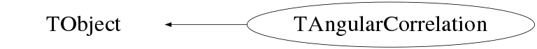

Function Members (Methods)
public:
| virtual | ~TAngularCorrelation() |
| void | TObject::AbstractMethod(const char* method) const |
| virtual void | TObject::AppendPad(Option_t* option = "") |
| Int_t | AssignGroupMaps(vector<Int_t>& group, vector<Double_t>& groupangles) |
| virtual void | TObject::Browse(TBrowser* b) |
| ULong_t | TObject::CheckedHash() |
| Bool_t | CheckGroupAngles(vector<Double_t>& groupangles) |
| Bool_t | CheckGroups(vector<Int_t>& group) |
| Bool_t | CheckMaps(Bool_t fold, Bool_t group) |
| Bool_t | CheckModifiedHistogram(TH1* hst) |
| static TClass* | Class() |
| virtual const char* | TObject::ClassName() const |
| virtual void | TObject::Clear(Option_t* = "") |
| void | ClearModifiedMaps() |
| virtual TObject* | TObject::Clone(const char* newname = "") const |
| virtual Int_t | TObject::Compare(const TObject* obj) const |
| virtual void | TObject::Copy(TObject& object) const |
| TH2D* | Create2DSlice(THnSparse* hst, Double_t min, Double_t max, Bool_t fold, Bool_t group) |
| TH2D* | Create2DSlice(TObjArray* hstarray, Double_t min, Double_t max, Bool_t fold, Bool_t group) |
| TGraphAsymmErrors* | CreateGraphFromHst() |
| TGraphAsymmErrors* | CreateGraphFromHst(TH1* hst, Bool_t fold, Bool_t group) |
| virtual void | TObject::Delete(Option_t* option = "")MENU |
| void | DisplayDiagnostics(TCanvas* c_diag) |
| virtual Int_t | TObject::DistancetoPrimitive(Int_t px, Int_t py) |
| TH1D* | DivideByWeights(TH1* hst, Bool_t fold, Bool_t group) |
| virtual void | TObject::Draw(Option_t* option = "") |
| virtual void | TObject::DrawClass() constMENU |
| virtual TObject* | TObject::DrawClone(Option_t* option = "") constMENU |
| virtual void | TObject::Dump() constMENU |
| virtual void | TObject::Error(const char* method, const char* msgfmt) const |
| virtual void | TObject::Execute(const char* method, const char* params, Int_t* error = 0) |
| virtual void | TObject::Execute(TMethod* method, TObjArray* params, Int_t* error = 0) |
| virtual void | TObject::ExecuteEvent(Int_t event, Int_t px, Int_t py) |
| virtual void | TObject::Fatal(const char* method, const char* msgfmt) const |
| virtual TObject* | TObject::FindObject(const char* name) const |
| virtual TObject* | TObject::FindObject(const TObject* obj) const |
| TH1D* | FitSlices(TH2* hst, TPeak* peak, Bool_t visualization) |
| static vector<Double_t> | GenerateAngleMap(vector<Int_t>& arraynumbers, vector<Int_t>& distances) |
| static vector<Double_t> | GenerateFoldedAngles(vector<Double_t>& anglemap) |
| static vector<Int_t> | GenerateFoldedIndices(vector<Double_t>& folds, vector<Double_t>& anglemap) |
| Int_t | GenerateGroupMaps(vector<Int_t>& arraynumbers, vector<Int_t>& distances, vector<Int_t>& group, vector<Double_t>& groupangles) |
| static map<Int_t,map<Int_t,Int_t> > | GenerateIndexMap(vector<Int_t>& arraynumbers, vector<Int_t>& distances, vector<Double_t>& anglemap) |
| Int_t | GenerateMaps(vector<Int_t>& arraynumbers, vector<Int_t>& distances) |
| Int_t | GenerateMaps(Int_t detectors, Int_t distance) |
| vector<Double_t> | GenerateModifiedAngles(Bool_t fold, Bool_t group) |
| vector<Int_t> | GenerateModifiedIndices(Bool_t fold, Bool_t group) |
| Int_t | GenerateModifiedMaps(Bool_t fold, Bool_t group) |
| vector<Int_t> | GenerateModifiedWeights(vector<Int_t>& modindices, vector<Int_t>& weights) |
| static vector<Int_t> | GenerateWeights(vector<Int_t>& arraynumbers, vector<Int_t>& distances, map<Int_t,map<Int_t,Int_t> >& indexmap) |
| TH1D* | Get1DSlice(Int_t index) |
| Double_t | GetAngleFromIndex(Int_t index) |
| Int_t | GetAngularIndex(Int_t arraynum1, Int_t arraynum2) |
| TH1D* | GetCentroidHst() |
| TH1D* | GetChi2Hst() |
| virtual Option_t* | TObject::GetDrawOption() const |
| static Long_t | TObject::GetDtorOnly() |
| TH1D* | GetFWHMHst() |
| Double_t | GetGroupAngleFromIndex(Int_t gindex) |
| Int_t | GetGroupFromIndex(Int_t index) |
| virtual const char* | TObject::GetIconName() const |
| TH1D* | GetIndexCorrelation() |
| Double_t | GetModifiedAngleFromIndex(Int_t modindex) |
| Int_t | GetModifiedIndex(Int_t index) |
| Int_t | GetModifiedWeight(Int_t modindex) |
| virtual const char* | TObject::GetName() const |
| Int_t | GetNumGroups() |
| Int_t | GetNumModIndices() |
| virtual char* | TObject::GetObjectInfo(Int_t px, Int_t py) const |
| static Bool_t | TObject::GetObjectStat() |
| virtual Option_t* | TObject::GetOption() const |
| TPeak* | GetPeak(Int_t index) |
| virtual const char* | TObject::GetTitle() const |
| virtual UInt_t | TObject::GetUniqueID() const |
| Double_t | GetWeightFromIndex(Int_t index) |
| Int_t | GetWeightsSize() |
| virtual Bool_t | TObject::HandleTimer(TTimer* timer) |
| virtual ULong_t | TObject::Hash() const |
| Bool_t | TObject::HasInconsistentHash() const |
| virtual void | TObject::Info(const char* method, const char* msgfmt) const |
| virtual Bool_t | TObject::InheritsFrom(const char* classname) const |
| virtual Bool_t | TObject::InheritsFrom(const TClass* cl) const |
| virtual void | TObject::Inspect() constMENU |
| TH1D* | IntegralSlices(TH2* hst, Double_t min, Double_t max) |
| void | TObject::InvertBit(UInt_t f) |
| virtual TClass* | IsA() const |
| virtual Bool_t | TObject::IsEqual(const TObject* obj) const |
| virtual Bool_t | TObject::IsFolder() const |
| Bool_t | TObject::IsOnHeap() const |
| virtual Bool_t | TObject::IsSortable() const |
| Bool_t | TObject::IsZombie() const |
| virtual void | TObject::ls(Option_t* option = "") const |
| void | TObject::MayNotUse(const char* method) const |
| TH2D* | Modify2DSlice(TH2* hst, Bool_t fold, Bool_t group) |
| virtual Bool_t | TObject::Notify() |
| void | TObject::Obsolete(const char* method, const char* asOfVers, const char* removedFromVers) const |
| void | TObject::operator delete(void* ptr) |
| void | TObject::operator delete(void* ptr, void* vp) |
| void | TObject::operator delete[](void* ptr) |
| void | TObject::operator delete[](void* ptr, void* vp) |
| void* | TObject::operator new(size_t sz) |
| void* | TObject::operator new(size_t sz, void* vp) |
| void* | TObject::operator new[](size_t sz) |
| void* | TObject::operator new[](size_t sz, void* vp) |
| TAngularCorrelation& | operator=(const TAngularCorrelation&) |
| virtual void | TObject::Paint(Option_t* option = "") |
| virtual void | TObject::Pop() |
| virtual void | TObject::Print(Option_t* option = "") const |
| void | PrintAngleMap() |
| void | PrintGroupAngleMap() |
| void | PrintGroupIndexMap() |
| void | PrintIndexMap() |
| void | PrintModifiedAngleMap() |
| void | PrintModifiedConditions() |
| void | PrintModifiedIndexMap() |
| void | PrintModifiedWeights() |
| void | PrintWeights() |
| virtual Int_t | TObject::Read(const char* name) |
| virtual void | TObject::RecursiveRemove(TObject* obj) |
| void | TObject::ResetBit(UInt_t f) |
| virtual void | TObject::SaveAs(const char* filename = "", Option_t* option = "") constMENU |
| virtual void | TObject::SavePrimitive(ostream& out, Option_t* option = "") |
| void | ScaleSingleIndex(TH1* hst, Int_t index, Double_t factor) |
| void | Set1DSlice(Int_t index, TH1D* slice) |
| void | TObject::SetBit(UInt_t f) |
| void | TObject::SetBit(UInt_t f, Bool_t set) |
| virtual void | TObject::SetDrawOption(Option_t* option = "")MENU |
| static void | TObject::SetDtorOnly(void* obj) |
| void | SetIndexCorrelation(TH1D* hst) |
| static void | TObject::SetObjectStat(Bool_t stat) |
| void | SetPeak(Int_t index, TPeak* peak) |
| virtual void | TObject::SetUniqueID(UInt_t uid) |
| virtual void | ShowMembers(TMemberInspector& insp) const |
| virtual void | Streamer(TBuffer&) |
| void | StreamerNVirtual(TBuffer& ClassDef_StreamerNVirtual_b) |
| virtual void | TObject::SysError(const char* method, const char* msgfmt) const |
| TAngularCorrelation() | |
| TAngularCorrelation(const TAngularCorrelation&) | |
| Bool_t | TObject::TestBit(UInt_t f) const |
| Int_t | TObject::TestBits(UInt_t f) const |
| void | UpdateDiagnostics() |
| void | UpdateIndexCorrelation() |
| void | UpdatePeak(Int_t index, TPeak* peak) |
| virtual void | TObject::UseCurrentStyle() |
| virtual void | TObject::Warning(const char* method, const char* msgfmt) const |
| virtual Int_t | TObject::Write(const char* name = 0, Int_t option = 0, Int_t bufsize = 0) |
| virtual Int_t | TObject::Write(const char* name = 0, Int_t option = 0, Int_t bufsize = 0) const |
protected:
| virtual void | TObject::DoError(int level, const char* location, const char* fmt, va_list va) const |
| void | TObject::MakeZombie() |
private:
| virtual Bool_t | CheckTObjectHashConsistency() const |
Data Members
public:
| static TObject::(anonymous) | TObject::kBitMask | |
| static TObject::EStatusBits | TObject::kCanDelete | |
| static TObject::EStatusBits | TObject::kCannotPick | |
| static TObject::EStatusBits | TObject::kHasUUID | |
| static TObject::(anonymous) | TObject::kInconsistent | |
| static TObject::EStatusBits | TObject::kInvalidObject | |
| static TObject::(anonymous) | TObject::kIsOnHeap | |
| static TObject::EStatusBits | TObject::kIsReferenced | |
| static TObject::EStatusBits | TObject::kMustCleanup | |
| static TObject::EStatusBits | TObject::kNoContextMenu | |
| static TObject::(anonymous) | TObject::kNotDeleted | |
| static TObject::EDeprecatedStatusBits | TObject::kObjInCanvas | |
| static TObject::(anonymous) | TObject::kOverwrite | |
| static TObject::(anonymous) | TObject::kSingleKey | |
| static TObject::(anonymous) | TObject::kWriteDelete | |
| static TObject::(anonymous) | TObject::kZombie |
private:
| map<Int_t,TH1D*> | f1DSlices | / array of 1D histograms used to create fIndexCorrelations |
| vector<Double_t> | fAngleMap | / array correlating angular index with opening angle |
| TH1D* | fCentroid | / 1D plot of centroid vs. angular index |
| TH1D* | fChi2 | / 1D plot of chi^2 vs. angular index |
| TH1D* | fFWHM | / 1D plot of FWHM vs. angular index |
| Bool_t | fFolded | / switch to indicate a folded correlation |
| vector<Double_t> | fGroupAngles | / array correlating group assignment with their average angles |
| Bool_t | fGrouped | / switch to indicate a grouped correlation |
| vector<Int_t> | fGroups | / array correlating angular index with group assignment |
| TH1D* | fIndexCorrelation | / 1D plot of counts vs. angular index |
| map<Int_t,map<Int_t,Int_t> > | fIndexMap | / 2D square array correlating array number pairs with angular index |
| Int_t | fIndexMapSize | / size of fIndexMap |
| vector<Double_t> | fModifiedAngles | array correlating modified index with angles |
| vector<Int_t> | fModifiedIndices | array correlating angular index with modified index |
| vector<Int_t> | fModifiedWeights | array correlating modified index with weights |
| Int_t | fNumIndices | / number of angular indices |
| map<Int_t,TPeak*> | fPeaks | / array of TPeaks used to create fIndexCorrelations |
| vector<Int_t> | fWeights | / array correlating angular index with weight (number of detector pairs at that index) |
Class Charts



Function documentation
TH2D* Create2DSlice(THnSparse* hst, Double_t min, Double_t max, Bool_t fold, Bool_t group)
identify the axes (angular index, energy, energy) we assume that the two axes with identical limits are the energy axes
TH2D* Create2DSlice(TObjArray* hstarray, Double_t min, Double_t max, Bool_t fold, Bool_t group)
identify the type of histograms included in the array a TH2D will need to be projected differently than a THnSparse array
TH2D* Modify2DSlice(TH2* hst, Bool_t fold, Bool_t group)
TGraphAsymmErrors* CreateGraphFromHst(TH1* hst, Bool_t fold, Bool_t group)
Int_t GetAngularIndex(Int_t arraynum1, Int_t arraynum2)
void PrintIndexMap()
void PrintWeights()
void PrintGroupIndexMap()
void PrintGroupAngleMap()
void PrintAngleMap()
void PrintModifiedAngleMap()
void PrintModifiedWeights()
void PrintModifiedIndexMap()
std::vector<Double_t> GenerateAngleMap(vector<Int_t>& arraynumbers, vector<Int_t>& distances)
std::vector<Int_t> GenerateWeights(vector<Int_t>& arraynumbers, vector<Int_t>& distances, map<Int_t,map<Int_t,Int_t> >& indexmap)
std::vector<Int_t> GenerateModifiedWeights(vector<Int_t>& modindices, vector<Int_t>& weights)
std::map<Int_t, std::map<Int_t, Int_t>> GenerateIndexMap(vector<Int_t>& arraynumbers, vector<Int_t>& distances, vector<Double_t>& anglemap)
initialize map
Bool_t CheckGroups(vector<Int_t>& group)
Bool_t CheckGroupAngles(vector<Double_t>& groupangles)
std::vector<Double_t> GenerateFoldedAngles(vector<Double_t>& anglemap)
std::vector<Int_t> GenerateFoldedIndices(vector<Double_t>& folds, vector<Double_t>& anglemap)
Int_t GenerateMaps(std::vector<Int_t>& arraynumbers, std::vector<Int_t>& distances)
basic consistency check
Int_t GenerateModifiedMaps(Bool_t fold, Bool_t group)
Int_t GenerateGroupMaps(vector<Int_t>& arraynumbers, vector<Int_t>& distances, vector<Int_t>& group, vector<Double_t>& groupangles)
basic consistency check
Int_t GenerateMaps(Int_t detectors, Int_t distance)
std::vector<Int_t> GenerateModifiedIndices(Bool_t fold, Bool_t group)
void ClearModifiedMaps()
std::vector<Double_t> GenerateModifiedAngles(Bool_t fold, Bool_t group)
void ScaleSingleIndex(TH1* hst, Int_t index, Double_t factor)
void UpdatePeak(Int_t index, TPeak* peak)
when I try to re-fit a bad peak, we should add in a safe-gaurd to make the function return if the peak cannot be re-fit create canvas
Bool_t CheckModifiedHistogram(TH1* hst)
void PrintModifiedConditions()
TH1D* DivideByWeights(TH1* hst, Bool_t fold, Bool_t group)
void DisplayDiagnostics(TCanvas* c_diag)
Double_t GetAngleFromIndex(Int_t index)
TODO: move the next function to implementation file and check if in range
Double_t GetWeightFromIndex(Int_t index)
TODO: move the next function to implementation file and check if in range
Int_t GetGroupFromIndex(Int_t index)
Double_t GetGroupAngleFromIndex(Int_t gindex)
Int_t GetModifiedIndex(Int_t index)
Int_t GetModifiedWeight(Int_t modindex)
Double_t GetModifiedAngleFromIndex(Int_t modindex)
void SetPeak(Int_t index, TPeak* peak)
diagnostics and re-fitting TODO: move the next function to implementation file and update fIndexCorrelation
{ fPeaks[index] = peak; }TGraphAsymmErrors* CreateGraphFromHst(TH1* hst, Bool_t fold, Bool_t group)